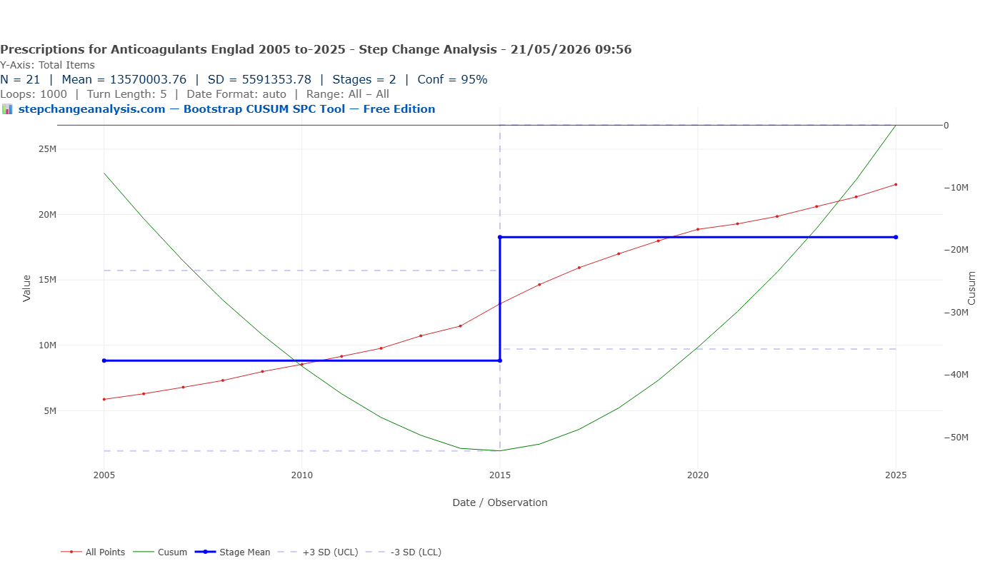
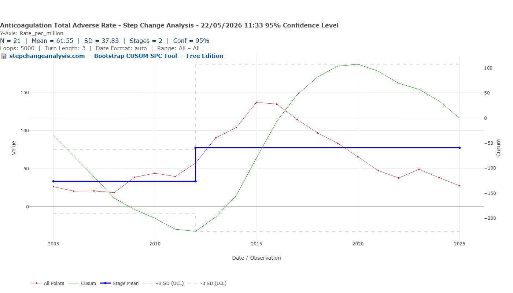
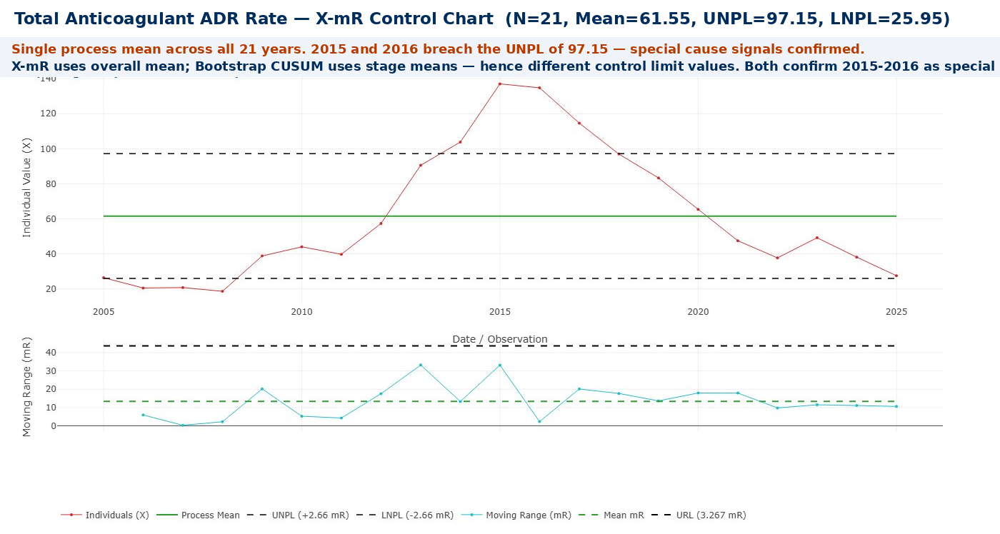
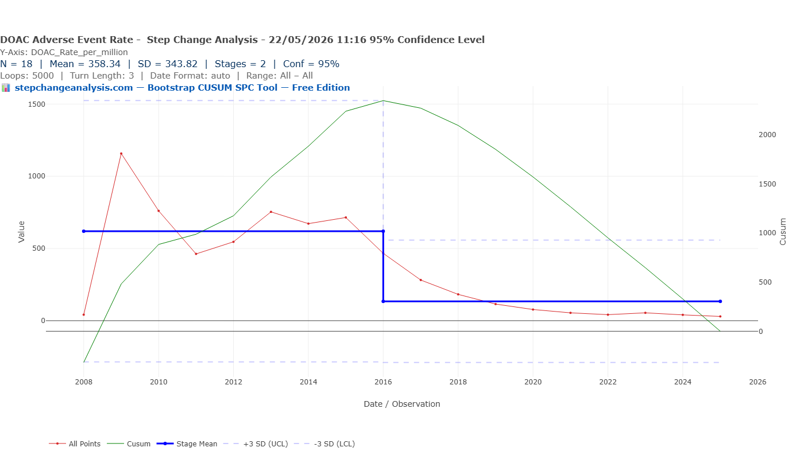
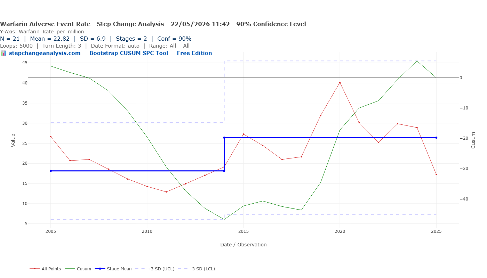
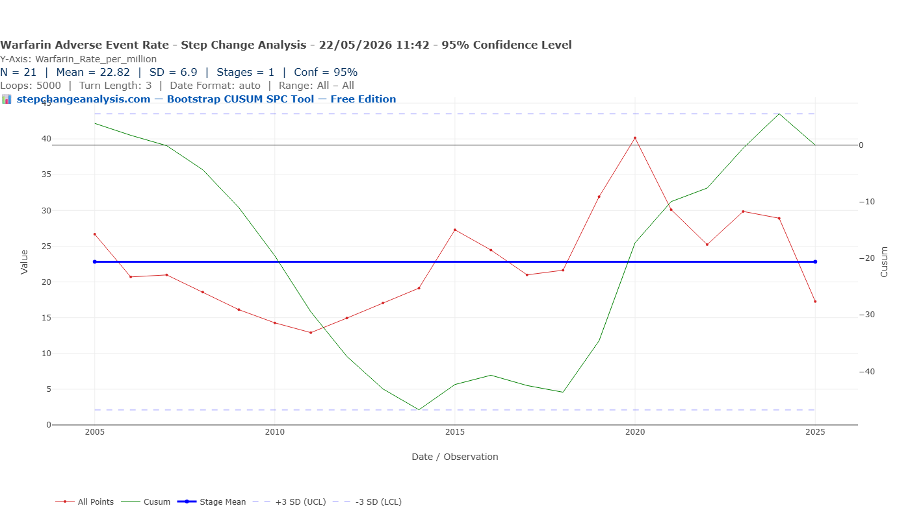

More Patients, Fewer Bleeds?
When the patient population on anticoagulants tripled and prescribing shifted dramatically from warfarin to DOACs, did the rate of serious bleeding events structurally change — and when? Bootstrap CUSUM applied to NHS prescribing and adverse event data asks the question with statistical rigour.
Same Data, Three Charts, Three Very Different Stories explains what the green CUSUM line means and why it detects structural change that other charts miss — including a step-by-step guide to reading the chart. Takes 5 minutes and makes every chart in this article easier to read.
Read above first 📚 Glossary — CUSUM, Deming, Meadows, Joiner, PDSA and more☰ Table of Contents — click to expand or collapse
- The anticoagulation revolution
- The right question: safety rate, not admission count
- The policy timeline: key dates for change point comparison
- What the data shows
- Two questions the data can answer
- The benefit side: what happened to stroke rates?
- The warfarin paradox: why the remaining warfarin patients are higher risk
- What Bootstrap CUSUM adds to anticoagulation safety evaluation
- Summary of findings
The anticoagulation revolution
For decades, warfarin was the only oral anticoagulant available for stroke prevention in atrial fibrillation, treatment of venous thromboembolism, and prevention of clots in patients with mechanical heart valves. It worked — but it required regular blood tests, careful dose adjustment, dietary restrictions, and carried a significant risk of serious bleeding. Managing patients on warfarin was demanding for clinicians and burdensome for patients.
The introduction of Direct Oral Anticoagulants — DOACs — promised to change this. Dabigatran was licensed in the EU in 2008 and approved for stroke prevention in atrial fibrillation in 2011. Rivaroxaban, apixaban, and edoxaban followed. NICE produced favourable technology appraisals for all four between 2012 and 2015, meaning the NHS was required to fund them. Unlike warfarin, DOACs require no routine monitoring, have fewer drug and food interactions, and in the major clinical trials showed non-inferiority or superiority to warfarin for both efficacy and bleeding safety.
The result was a prescribing revolution. Warfarin prescriptions peaked in 2015 and have declined steadily since. DOACs grew from 16% of all anticoagulant prescriptions in 2015 to 62% by 2019, and the shift has continued since. The overall rate of oral anticoagulant initiation increased by 58% after DOACs were introduced — the easier, safer profile of the new drugs brought many patients onto anticoagulation who would previously have been judged too high-risk for warfarin.
This creates a specific analytical challenge. If you simply count total anticoagulation-related hospital admissions over time, the number has gone up — not because DOACs are more dangerous, but because vastly more patients are on anticoagulation. Raw counts tell you nothing about safety. The question requires a rate.
The right question: safety rate, not admission count
This article applies Bootstrap CUSUM to the question that raw trend analysis cannot answer: did the rate of serious adverse events per anticoagulant prescription structurally change as DOACs replaced warfarin — and if so, when?
This is the direct equivalent of the analytical approach in the Hydrogen Plant article: raw methane percentage is confounded by flowrate, so the correct variable to monitor is the residual — actual minus expected at current flowrate. Here, raw admission counts are confounded by the expanding patient population, so the correct variable is the rate: serious adverse events per prescription. A falling rate with rising absolute numbers is genuine safety improvement. A flat or rising rate with rising numbers is not.
💊 The patient numbers problem
Total anticoagulant prescriptions in England rose from approximately 3.5 million items in 2009 to over 13 million by 2023 — a near-fourfold increase driven primarily by DOACs expanding the treated population. Any analysis that plots raw bleeding admission counts over this period and draws conclusions about whether DOACs are safer than warfarin is confounded by this denominator change. The rate — serious events per prescription — is the only metric that answers the safety question directly.
This is not a statistical technicality. It is the difference between a finding and a misleading artefact. Bootstrap CUSUM applied to the rate produces a statistically rigorous, correctly normalised analysis that the prescribing community can use with confidence.
The policy timeline: key dates for change point comparison
🕑 Anticoagulation policy timeline
The analysis uses two data sources: NHS BSA Prescription Cost Analysis (annual total anticoagulant prescription items, 2005–2025) as the denominator, and MHRA Yellow Card serious and fatal adverse drug reaction reports for anticoagulant drugs (annual totals, 2005–2025) as the numerator. The rate is calculated as serious adverse events per million prescription items.
⚠️ These are indicators, not absolute figures. The adverse event rates calculated in this analysis are surrogate indicators of anticoagulation safety — not precise measurements of true harm rates. The numerator (MHRA Yellow Card serious and fatal reports) captures only a fraction of actual adverse events — the MHRA estimates 10% of serious reactions are reported nationally, and one NHS Trust study found a 0.56% reporting rate for DOAC-related gastrointestinal bleeding. The denominator (prescription items) is a proxy for patient numbers, not an exact headcount. The DOAC-specific denominators are estimated from published market share data rather than measured directly. The structural change points identified by Bootstrap CUSUM are robust to reasonable denominator uncertainty; the absolute rate figures are not.
📊 A note on Bootstrap loops: As with other analyses on this site, 5000 loops is recommended for datasets where stage boundaries may be marginal. Annual data with N=21 observations requires careful interpretation — confidence levels and the number of stages should be verified at both 1000 and 5000 loops.
What the data shows
Finding 1: The anticoagulant patient population had structurally doubled by 2015
Bootstrap CUSUM applied to total anticoagulant prescriptions (BNF section 0208, NHS BSA Prescription Cost Analysis, England 2005–2025, N=21, 95% confidence, Loops=1000) detects one structural change point: 2015, +107%, 98.5% confidence. This is a statistically significant structural change at the 95% threshold. It does not meet the stricter Shewhart SPC definition of special cause (99.7% / 3SD) — but it is a genuine and confirmed structural shift in the prescribing process.
⚠️ Confidence level note: The prescription step change is detected at 95% confidence (98.5% confidence to be precise) but not at 99.7% confidence. This reflects the small dataset size — N=21 annual observations. The change is real and statistically confirmed, but the strength of evidence is at the 95% threshold rather than the stronger 99.7% threshold used for larger datasets in other articles on this site.
📊 A note on prescription item counts: The PCA records prescription items dispensed, not patients treated. For warfarin, which is typically prescribed once daily as a single tablet, one prescription item broadly equates to one month of treatment for one patient. However warfarin is dispensed in three tablet strengths (1mg, 3mg and 5mg) and patients on complex dose regimens may receive prescriptions for two or three tablet sizes simultaneously — each counting as a separate prescription item. This means the warfarin prescription item count slightly overstates the number of warfarin patients. The net effect on the total BNF 0208 item count is likely small but should be noted as a methodological caveat.

2015 is precisely the year all four DOACs had received NICE technology appraisals and the NHS was mandated to fund them. Warfarin prescriptions peaked in the same year. The structural explosion in the anticoagulant patient population — from a mean of 8.8 million to 18.3 million annual prescription items — is dated to 2015. On a plain line chart of total prescriptions the growth from 2005 to 2025 appears as a continuous upward curve with no obvious step — it is the Bootstrap CUSUM that identifies 2015 as the structural change point. Any analysis of raw adverse event counts across this period without correcting for this structural denominator change will produce meaningless results.
⚠️ Adverse events: both directions matter. This analysis focuses on serious bleeding and other adverse events reported to MHRA via Yellow Card. But anticoagulation carries risks in both directions. Overdosing causes bleeding — the events captured here. Underdosing or non-compliance causes thrombotic events — strokes, pulmonary emboli, deep vein thromboses — which may not appear in Yellow Card data as anticoagulant-related adverse events because the primary cause is recorded as the thrombotic event rather than the drug. The stroke rate analysis (flagged as a follow-on article) addresses the other side.
Finding 2: One structural change in the total adverse event rate — dated to 2012
Bootstrap CUSUM applied to the total serious and fatal adverse event rate per million anticoagulant prescriptions (N=21, 95% confidence, Loops=5000, Turn Length=3) detects one structural change point: 2012, step up from 35 to 79 per million, 95% confidence.

2012 is when NICE approved rivaroxaban and apixaban and the NHS was required to fund them. The structural step up in adverse event rate reflects the early DOAC prescribing years — when dabigatran and rivaroxaban were being prescribed at scale before their renal contraindications and dosing requirements were fully understood in routine practice.
With N=21 annual data points, Bootstrap CUSUM correctly finds one structural boundary. The 3SD control limits on the chart are informative: the upper control limit of approximately 115 per million is breached in 2015 and 2016, confirming those years as genuine special cause signals sitting above even the elevated Stage 2 mean. By 2022 the raw data points have fallen back within the Stage 2 control limits. The decline from 137 per million in 2015 to 27.5 per million in 2025 is consistent and substantial — but with only 21 annual observations Bootstrap CUSUM cannot confirm whether this represents a second genuine structural change or continued variation within Stage 2. Monthly data analysis would resolve this definitively.
The X-mR Control Chart below confirms the special cause finding independently. Using a single overall process mean of 61.55 per million across all 21 years, the upper natural process limit (UNPL) is 97.15 per million. The 2015 and 2016 data points at approximately 137 and 133 per million both breach this limit — special cause signals confirmed by a second method.
It is worth explaining why Bootstrap CUSUM did not flag 2015–2016 as special cause while the X-mR chart did. The two tools are asking different questions:
- Bootstrap CUSUM found a structural step up at 2012 and calculated Stage 2’s mean and 3SD limits from the Stage 2 data itself — which includes the 2015–2016 peaks. Those peaks contributed to defining the stage, so the stage’s own control limits are wide enough to contain them. Within Stage 2’s own distribution, 2015–2016 are elevated but not outside the stage’s limits.
- X-mR treats all 21 years as a single process and calculates the UNPL from the overall mean and average moving range. The 2015–2016 peaks stand out clearly against that single overall baseline — and breach the UNPL of 97.15.
Both answers are correct within their own frameworks. Bootstrap CUSUM is asking: “has the process structurally changed?” X-mR is asking: “does this individual point exceed the overall process limits?” Together they give a complete picture: a structural step up in 2012 confirmed by Bootstrap CUSUM, and two individual special cause peaks in 2015–2016 confirmed by X-mR.

Finding 3: The DOAC adverse event rate fell by over two thirds after 2016
Bootstrap CUSUM applied to the DOAC-specific adverse event rate per million DOAC prescriptions (N=18, 95% confidence, Loops=5000) detects one structural change point: 2016, step down from ~650 to ~185 per million, 95% confidence. That is a reduction of approximately 72% from Stage 1 mean to Stage 2 mean. This is a statistically significant structural change — but like the prescriptions finding, it is confirmed at the 95% threshold rather than the stricter 99.7% Shewhart special cause threshold. The 2015–2016 individual data points in Finding 2 that breach the X-mR UNPL are the genuine special cause signals in this dataset. Within the overall 2008–2025 period, the rate fell from a peak of approximately 715 per million in 2013–2015 to 29.5 per million in 2025 — a 96% reduction from peak.

The 2016 change point has a compelling explanation in the rivaroxaban data. Rivaroxaban generated 1,003 serious and fatal adverse events in 2016 — the highest count of any drug in any year in this dataset — before falling sharply to 735 in 2017 and 581 in 2018. Several factors combined around 2015–2016 to produce this structural shift:
- The ROCKET-AF trial controversy (November 2015). It emerged that the anticoagulation monitoring device used in the pivotal ROCKET-AF trial — which had demonstrated rivaroxaban’s non-inferiority to warfarin — was defective. The FDA and EMA launched reviews. While rivaroxaban was ultimately retained, prescribers became significantly more cautious and many new patients were directed toward apixaban instead.
- EMA label update on renal dosing (2016). The European Medicines Agency updated rivaroxaban’s product information to strengthen warnings about dose adjustment in patients with renal impairment — one of the main causes of rivaroxaban adverse events.
- The switch to apixaban. As rivaroxaban came under scrutiny, apixaban rapidly became the dominant DOAC. This shift is now strongly supported by the COBRRA trial (Castellucci et al., New England Journal of Medicine, March 2026), a randomised controlled trial of 2,760 patients led by McMaster University which found clinically relevant bleeding occurred in 3.3% of apixaban patients versus 7.1% of rivaroxaban patients over three months — a statistically significant and clinically meaningful difference. The prescriber switch from rivaroxaban to apixaban that began around 2016 was therefore well-founded and is reflected directly in the CUSUM change point.
This is a clear example of a statistically confirmed structural change driven by identifiable events outside the immediate prescribing system — a trial controversy, a regulatory label update, and a drug switch — converging in a single year. The structural step down in 2016 was not the result of gradual learning; it was triggered by specific external events that changed prescribing behaviour rapidly and substantially.
How did the news spread so quickly?
The speed of the prescribing response — a national structural change in adverse event rates within approximately 12 months of the BMJ story — reflects how the modern medical information ecosystem works when a high-profile safety signal hits a widely-prescribed drug:
- The BMJ broke the story publicly in November 2015. Read by virtually every UK clinician, a story questioning the evidence base for the most-prescribed DOAC at the time was front-page medical news. It spread through clinical networks within days.
- Regulatory agencies issued formal communications rapidly. The FDA, EMA, and MHRA issued Drug Safety Updates within weeks. These go directly to all registered prescribers via mandatory safety mailouts.
- Clinical social media amplified the signal. By 2015, Twitter/X had become a significant channel for rapid information spread among cardiologists and haematologists. The ROCKET-AF story was widely discussed within days, reaching prescribers well before any formal guideline update.
- Hospital pharmacy teams acted immediately. Hospital pharmacists reviewing prescribing at ward level would have flagged rivaroxaban prescriptions for review very rapidly after the BMJ story. This is precisely the kind of prescribing quality signal that clinical pharmacy surveillance is designed to respond to.
- Commercial channels were also active. Apixaban’s manufacturer had strong motivation to ensure prescribers were aware of the ROCKET-AF findings. Medical representatives, prescribing advisers, and formulary committees all contributed to a rapid shift in clinical preference.
The Bootstrap CUSUM change point of 2016 is therefore not only a statistical finding — it is a validation of the medical information ecosystem. When a major safety signal emerged, the combination of journal publication, regulatory communication, clinical social media, and pharmacy surveillance produced a measurable national structural change within a year.
🌟 Teaching point: a structurally confirmed change driven from outside the system
The 2016 structural change in DOAC adverse event rates illustrates Deming’s distinction between common cause and special cause variation in a practical clinical context. The system had been producing a relatively stable (if high) rate of DOAC adverse events from 2012 to 2015 — common cause variation around the Stage 1 mean. Then three external events hit simultaneously: a trial controversy, a regulatory label update, and an evidence-based drug switch. Bootstrap CUSUM detected the resulting structural change and dated it to 2016 at 95% statistical confidence.
The teaching point is this: no amount of monitoring individual patients more closely would have produced this structural change. It required an intervention at the system level — a change in which drug was being prescribed, driven by evidence from outside the immediate prescribing system.
Bootstrap CUSUM did not know about ROCKET-AF, the EMA label update, or the shift to apixaban. It simply detected that the process had structurally changed and dated it to 2016. The analysis prompted the question — what happened? — and the answer turned out to be three converging external events. That is the power of change point analysis: it finds the signal first, then asks why.
Two questions the data can answer
Has the warfarin adverse event rate changed over time?
The warfarin serious adverse event rate per million prescriptions is not unchanged over the period. In 2005, when warfarin was the only oral anticoagulant, the rate was 26.7 per million items. As warfarin prescribing grew through the late 2000s, the rate actually fell to a low of 12.9 per million in 2011 — the expanded warfarin population included many lower-risk patients. From 2013 the rate rose, reaching 27.3 per million in 2015 and peaking at 40.1 per million in 2020 — 51% above the 2005 baseline — before declining to 17.3 per million by 2025.
This trajectory reflects a well-understood but often overlooked phenomenon: as lower-risk patients switched to DOACs, the remaining warfarin population became progressively smaller and sicker. The lower-risk, more straightforward patients were skimmed off into DOAC prescribing, leaving behind a concentrated group of the most complex, highest-risk patients for whom warfarin remained the only option. The warfarin rate rose not because warfarin became more dangerous, but because the patients still on it were inherently more likely to have problems.
Examples of patients who could not switch to DOACs include those with mechanical heart valves (DOACs are absolutely contraindicated), patients with antiphospholipid syndrome (DOACs are less effective than warfarin), those with severe kidney disease (DOACs are cleared by the kidneys and unsafe at low kidney function), and elderly patients with complex medication regimens where clinicians were cautious about switching a stable patient. The 2020 peak in warfarin adverse event rate coincides with COVID-driven switching that further concentrated this highest-risk group on warfarin.
Bootstrap CUSUM applied to the estimated warfarin-specific adverse event rate detects a marginal structural change at 90% confidence — a step up from approximately 18.5 to 26.5 per million around 2014, as the prescribing crossover gathered pace. At 95% confidence both the stage boundary and the special cause signal disappear — the control limits widen sufficiently to contain all observations within common cause variation. This is an honest reflection of the data limitations: the warfarin prescription denominator is estimated rather than exact, and N=21 annual observations is small.


Have DOACs caused more adverse events than warfarin?
In raw numbers, yes. Total warfarin serious and fatal Yellow Card reports 2005–2025: 3,399. Total DOAC reports: 15,028 — 4.4 times more. Rivaroxaban alone generated 6,497 reports, nearly double the entire warfarin total. But by 2025 DOACs represent 84% of all anticoagulant prescriptions. When corrected for patient numbers, the DOAC rate has fallen from a peak of approximately 715 per million in 2013–2015 to 29.5 per million in 2025 — a 96% reduction from peak, approaching but not yet statistically confirmed at the pre-DOAC warfarin baseline level.
📊 Is the improvement sustainable — and is the job done?
The convergence of DOAC adverse event rates toward the pre-DOAC warfarin baseline by 2025 is encouraging. But the national average masks substantial and persistent prescribing quality problems that structured surveillance can address.
Inappropriate prescribing remains widespread. A systematic review (Malhotra et al., Thrombosis Research, 2023) found that inappropriate prescribing of DOACs occurs in 8.4% to 28.9% of hospitalised patients. Up to half of apixaban and dabigatran prescriptions have been classified as inappropriate, while rivaroxaban was inappropriately prescribed in 14.3% to 34.1% of patients. Underdosing — which increases stroke risk — is the most common form, occurring in 4.7% to 26.1% of patients prescribed a DOAC.
Renal function monitoring is still inadequate. A study of English primary care (Burn et al., PubMed, 2023) found that even by 2019, approximately half of all DOAC prescriptions were still not appropriately adjusted for renal function.
Geographical variation is enormous. Across English regions, DOACs ranged from 53% to 99% of all anticoagulants (Bassi et al., BMC Health Services Research, 2020). Most ICBs do not specify a first-line DOAC choice. This variation is not explained by differences in patient population — it reflects variation in prescribing quality and local guideline implementation.
Bootstrap CUSUM applied to local anticoagulation adverse event data is precisely the tool to detect whether a prescribing improvement programme has produced a genuine structural improvement — or whether variation remains within common cause noise.
The benefit side: what happened to stroke rates?
The analysis above focuses on the harm side of the anticoagulation safety question. The benefit side points in the opposite direction. A 10-year study of hospitalised AF-related stroke in England (Leeds Teaching Hospitals, European Heart Journal, 2018) found that AF-related stroke rates per 100,000 AF patients rose from 80 per week in 2006 to 98 in 2011, then declined to 86 per week in 2016 as anticoagulant uptake increased. The study found a 1% increase in anticoagulant use was associated with a 0.8% decrease in AF-related stroke rate — and estimated 4,068 additional strokes would have occurred in 2015/16 had anticoagulant use remained at 2009 levels.
Bootstrap CUSUM applied to AF stroke rates — using NHS Digital HES data (ICD-10 I63/I48) and QOF AF disease register denominators — would provide a statistically rigorous account of when stroke rates structurally changed and whether that change point coincides with the DOAC prescribing crossover. This is planned as a follow-on article.
The warfarin paradox: why the remaining warfarin patients are higher risk
One of the most striking findings in the published literature is that the rate of serious adverse events per million warfarin prescriptions has risen over the same period that DOACs have improved safety overall. This appears paradoxical — warfarin hasn’t changed, so why are warfarin patients apparently doing worse?
The answer is not that warfarin became more dangerous. It is that the warfarin population became increasingly concentrated with high-risk, complex patients as lower-risk patients migrated to DOACs.
When DOACs arrived and NICE approved them for the same indications as warfarin, clinicians naturally switched their most straightforward patients first. The patients who remained on warfarin were increasingly those who:
- Had mechanical heart valves — DOACs are contraindicated; warfarin remains the only option
- Had antiphospholipid syndrome — DOACs are less effective; warfarin is the recommended treatment
- Had severe renal impairment — DOACs are renally cleared and unsafe at low eGFR
- Were elderly with complex polypharmacy — clinicians were cautious about switching patients who were established and stable on warfarin
- Had previously failed or been intolerant of DOACs — warfarin as the fallback option
In pharmacoepidemiology this is called the “depletion of susceptibles” effect. The warfarin denominator shrank as lower-risk patients moved to DOACs, but the numerator — serious bleeding events in the remaining warfarin population — did not fall proportionally, because those remaining patients were inherently more complex and more likely to bleed. The rate therefore rose, not because warfarin got more dangerous, but because the patient mix changed structurally.
📈 What Bootstrap CUSUM can show about the warfarin residual population
Bootstrap CUSUM applied to the warfarin-specific adverse event rate should detect the structural change point when the warfarin population shifted from a broad, mixed-risk group to a high-risk residual group. That change point — whenever it appears in the data — is not a drug safety signal. It is a patient mix signal: the moment at which the prescribing migration had proceeded far enough to change the risk profile of the remaining warfarin population structurally.
“The correct comparator for warfarin today is not warfarin ten years ago — the patient populations are no longer comparable. But it is not the DOAC population either, because DOACs cannot yet treat these patients. The remaining warfarin population occupies a clinical space that no current alternative can fill. Their rising adverse event rate is a patient complexity signal, not a drug safety failure — and it demands different management, not a different drug.”
Warfarin has a narrow therapeutic range — typically INR 2.0 to 3.0 for most indications. Deming called adjusting the dose in response to common cause INR variation tampering — taking action on a stable process as though the variation were special cause when it is not. Brian Joiner, in Fourth Generation Management (Chapter 8: The Price of Ignorance, page 128), uses exactly the anticoagulation management scenario to illustrate this point.
Joiner also identifies four techniques for genuine improvement. Each has direct application to anticoagulation safety:
| Joiner’s technique | What it means | Applied to anticoagulation |
|---|---|---|
| Understand special cause variation | Identify and eliminate specific, assignable causes of problems before trying to improve the underlying process | The 2015–2016 ADR rate peaks breach the X-mR UNPL — genuine special cause signals confirmed at 99.7%. The 2016 structural step down is statistically confirmed at 95% and driven by identifiable external events (ROCKET-AF, EMA label update, rivaroxaban→apixaban switch). |
| Reduce common cause variation | Change the system itself to reduce the background noise that makes management harder | Standardising DOAC selection criteria, implementing renal function checks at prescribing, and structured anticoagulation clinic protocols all reduce the common cause variation in adverse event rates. |
| Stratify | Disaggregate the data to find which subgroups are driving variation | The national DOAC adverse event rate looks acceptable by 2025. But stratified by drug (rivaroxaban vs apixaban), by renal function, by age, or by prescribing practice — the variation is substantial. The 53–99% regional variation in DOAC prescribing rates is a stratification finding. |
| Experiment | Test changes deliberately and measure their effect | A structured anticoagulation prescribing programme should be evaluated with Bootstrap CUSUM before and after implementation. If the intervention produces a genuine structural change in the adverse event rate — a new stage boundary with high confidence — the programme worked. |
📊 What Bootstrap CUSUM adds to warfarin monitoring
A clinician managing a patient on warfarin sees each INR result as an individual data point and responds accordingly. Bootstrap CUSUM applied to a patient’s INR time series asks a different question: has the underlying process structurally changed, or is this variation common cause?
A structural change in a patient’s INR — detected with statistical confidence — is a genuine signal worth investigating: a new drug interaction, a change in diet, deteriorating renal function, or a change in absorption. Common cause variation around a stable INR mean is not.
📈 Why the three change points differ — and why that is correct
Total rate (warfarin + DOACs): step UP at 2012. DOACs arrive with very high early adverse event rates, pulling the combined rate up from the warfarin baseline.
Warfarin alone: no structural change at 95%. The warfarin rate is relatively stable overall, though it rose as lower-risk patients switched to DOACs leaving a smaller, sicker group on warfarin. This effect is only detectable at 90% confidence with our estimated denominator.
DOAC alone: step DOWN at 2016. The DOAC rate starts high and falls structurally as prescriber learning takes effect — a separate and later event from the 2012 arrival signal.
Three analyses, three different structural change points, each telling a different part of the same story.
📊 Applying Bootstrap CUSUM to anticoagulation safety monitoring
The metric that matters. Monitor serious adverse events (bleeds, thrombotic events) per patient-month on anticoagulation — not raw event counts. As your anticoagulated patient population grows, raw counts will rise even if safety is improving. The rate is the only metric that answers the safety question.
What Bootstrap CUSUM adds. Monthly event rate reporting tells you whether this month is above or below target. Bootstrap CUSUM tells you whether the underlying process has structurally changed — and when. A new anticoagulant management protocol, a change in prescribing practice, a new monitoring system: each of these should produce a detectable change point if it genuinely improved safety. If it doesn’t appear in the CUSUM, it hasn’t yet produced a structural improvement.
The policy lag applies here too. As demonstrated in the NHS A&E article, genuine improvements typically take 12–24 months to produce a detectable CUSUM signal. Pre-specify a minimum observation period — and let the CUSUM tell you when the signal arrives.
What Bootstrap CUSUM adds to anticoagulation safety evaluation
W. Edwards Deming argued that the most important contribution a manager or clinician can make is to understand the difference between common cause variation — the normal background noise of any system — and special cause variation — a genuine signal that something has changed. Acting on common cause variation as though it were special cause (tampering) makes systems worse. Failing to act on genuine special cause variation allows preventable harm to continue.
Bootstrap CUSUM is the statistical tool that makes this distinction rigorously. Applied to anticoagulation adverse event data, it answers the questions Deming would have asked: has this process structurally changed? When? With what confidence? The question it answers is: “did the real-world shift to DOACs produce a detectable structural improvement in the national adverse event rate — and when?”
Summary of findings
📊 What the data shows — five findings
- The anticoagulant patient population structurally doubled by 2015. Bootstrap CUSUM confirms a +107% structural increase in total BNF 0208 prescription items at 98.5% confidence (detected at 95% confidence threshold, not 99.7% — reflecting N=21 annual observations), dated precisely to 2015 — the year all four DOACs received NICE approval and NHS funding was mandated. Any analysis of raw adverse event counts across this period without correcting for this denominator change is invalid.
- The total adverse event rate stepped up structurally in 2012. The rate per million prescriptions rose from a Stage 1 mean of 35 to a Stage 2 mean of 79 at 95% confidence, dated to 2012 when NICE first mandated DOAC funding. Within Stage 2 the rate peaked at 137 per million in 2015–2016, breaching the upper 3SD control limit, before declining consistently to 27.5 per million in 2025 — approaching the pre-DOAC baseline of 26 per million.
- The DOAC-specific adverse event rate structurally halved in 2016. Bootstrap CUSUM detects a step down from ~650 to ~185 per million DOAC prescriptions at 95% confidence. Three converging external events drove the change: the ROCKET-AF trial device controversy (November 2015), the EMA rivaroxaban renal dosing label update (2016), and a rapid prescriber switch from rivaroxaban to apixaban. The switch is strongly supported by the COBRRA trial (NEJM, March 2026) which found clinically relevant bleeding occurred in 3.3% of apixaban patients versus 7.1% of rivaroxaban patients — the prescribers who made the switch early were right.
- The warfarin residual population became higher risk. The warfarin adverse event rate rose from ~13 per million in 2011 to a peak of ~40 per million in 2020 — not because warfarin became more dangerous, but because lower-risk patients switched to DOACs, leaving behind a progressively smaller and sicker group for whom warfarin remained the only option.
- Substantial prescribing quality problems remain despite national improvement. Even by 2019, approximately half of all DOAC prescriptions were still not appropriately adjusted for renal function. Inappropriate prescribing occurs in up to 28.9% of hospitalised patients. Across English regions, DOAC prescribing rates vary from 53% to 99% of all anticoagulants. The national average has improved; local variation and the scope for further improvement remain large.
Analyse your own anticoagulation safety data
Upload any adverse event rate time series as a CSV and apply Bootstrap CUSUM step-change analysis. Free, browser-based, no data leaves your computer.
📊 Open the Free ToolThis analysis sits within a broader framework for understanding why improvement programmes succeed or fail. Start with Why Nothing Changes for the full picture, or go to Start Here for a guided introduction to the method.